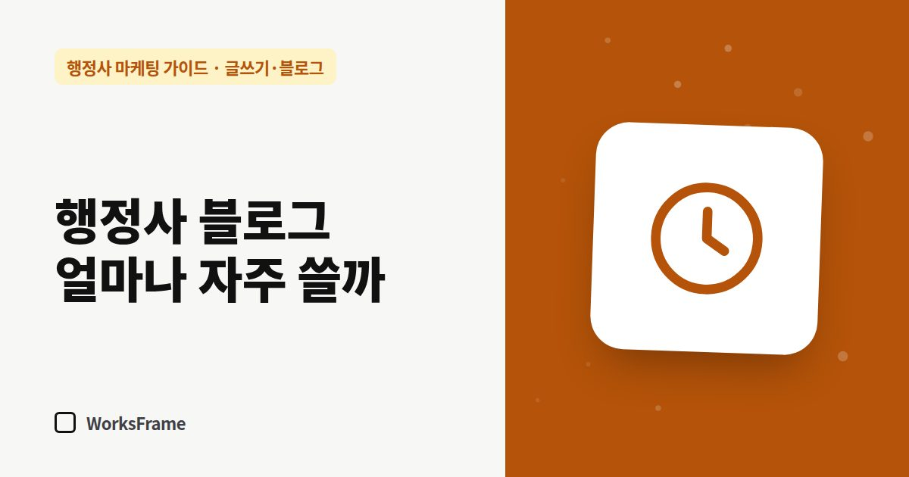

글쓰기·블로그
행정사 블로그, 얼마나 자주 써야 할까 — 현실적인 발행 주기
한 줄 답
매일 쓰는 것보다 멈추지 않는 게 중요합니다. 혼자라면 주 1편, 바쁜 달엔 예전 글 1편을 고쳐 쓰기만 해도 충분합니다.

“블로그는 매일 써야 한다”는 말을 듣고 시작했다가, 상담이 몰리는 달에 멈추고 다시 시작하지 못하는 경우가 많습니다. 발행 주기는 많이보다 멈추지 않게가 중요합니다.
현실적인 주기
| 상황 | 권하는 주기 |
|---|---|
| 개업 첫 3개월 | 주 1~2편 — 주력 업무 기본 안내부터 |
| 안정기 | 주 1편 또는 격주 1편 |
| 바쁜 달 | 새 글 대신 기존 글 1편 고쳐 쓰기 |
한 달 4편이면 1년에 48편입니다. 업무 안내 48편이 쌓인 사무소는 검색에서 들어올 입구가 48개인 셈입니다.
주간 루틴 (1시간)
새 글만큼 중요한 ‘고쳐 쓰기’
오래된 업무 안내는 틀린 정보가 될 수 있습니다. 분기마다 이렇게 점검하세요.
- 방문이 많은 글 5편의 기준·서류·기간이 여전히 맞는지
- 기준 날짜 갱신
- 관련 새 글 링크 추가
멈췄다면
몇 달 쉬었어도 괜찮습니다. 공백을 사과하는 글 대신, 가장 많이 받는 질문 하나에 답하는 글로 다시 시작하세요.
자주 묻는 질문
매일 쓰면 더 빨리 효과가 나나요?
양이 늘면 입구도 늘지만, 품질이 떨어지면 역효과입니다. 지킬 수 있는 주기로 꾸준히 쓰는 것이 결국 더 많이 쌓입니다.
글을 맡기면 주기를 지키기 쉬울까요?
초안 작성과 발행을 맡기면 주기는 지키기 쉬워집니다. 다만 내용 확인은 행정사가 해야 합니다.